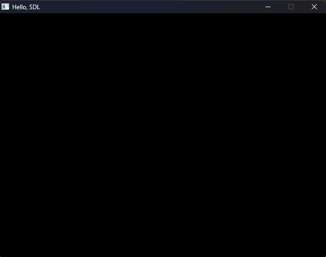
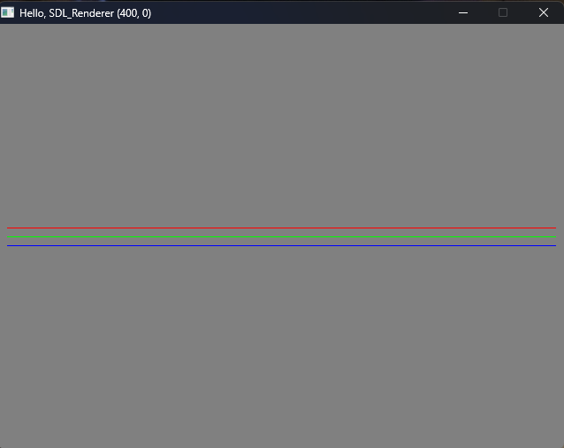
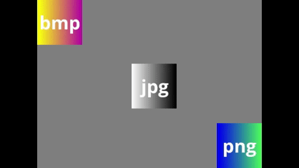

Biblioteca SDL
01 de setembro de 2026
No conteúdo disponibilizado para a aula, aprendemos a configurar e utilizar a biblioteca SDL, que segundo a documentação:
É uma lib utilizada em diversos jogos e animações. A partir do código do GitHub da aula (e depois de um certo sufoco pra configurar no meu VSCode), consegui fazer um Hello World, que é basicamente uma tela preta com as configurações estabelecidas.

Depois disso, mexemos com a SDL_renderer para trocar a cor do fundo para cinza e desenhar 3 linhas com as cores vermelha, verde e azul. Para isso, usamos SDL_SetRenderDrawColor(), onde o primeiro número são os níveis de vermelho, o segundo são os níveis de verde e o terceiro, o azul. O quarto valor é o canal alpha, relacionado à transparência. Como queremos um fundo cinza, os níveis devem ser iguais para todas as cores. Para cada cor, colocamos o nível máximo na cor desejada (255) e o restante se torna 0. Conseguimos esse resultado:

Usamos também a biblioteca SDL_image para carregar 3 imagens em diferentes formatos: .bmp, .png e .jpg. Elas são carregadas como texturas, o que quer dizer que não manipulamos diretamente os pixels da imagem. O interessante é que podemos definir o local onde elas aparecem na janela. Como desafio, tentei fazer com que a imagem .jpg se movesse junto com o cursor do mouse.

Como o código já possuía SDL_EVENT_MOUSE_MOTION com as coordenadas x e y do cursor, para que a imagem ficasse centralizada, defini sua posição x como a coordenada x do mouse menos metade da largura da imagem, e sua posição y como a coordenada y do mouse menos metade da altura da imagem. Para isso, adicionei o seguinte trecho ao código:
jpgRect.x = event.motion.x - jpgRect.w / 2.0f;
jpgRect.y = event.motion.y - jpgRect.h / 2.0f;
E essa foi minha primeira experiência com o SDL :)
← Voltar para o início